Em 3 passos (Concreto → Desenho → Conta), seu filho de 8 a 11 anos aprende a enxergar o problema antes de fazer a conta, e treina em missões de mistério para imprimir. Você só precisa seguir o guia.
Singapura: 1º lugar em matemática no TIMSS 2023 e no PISA 20221
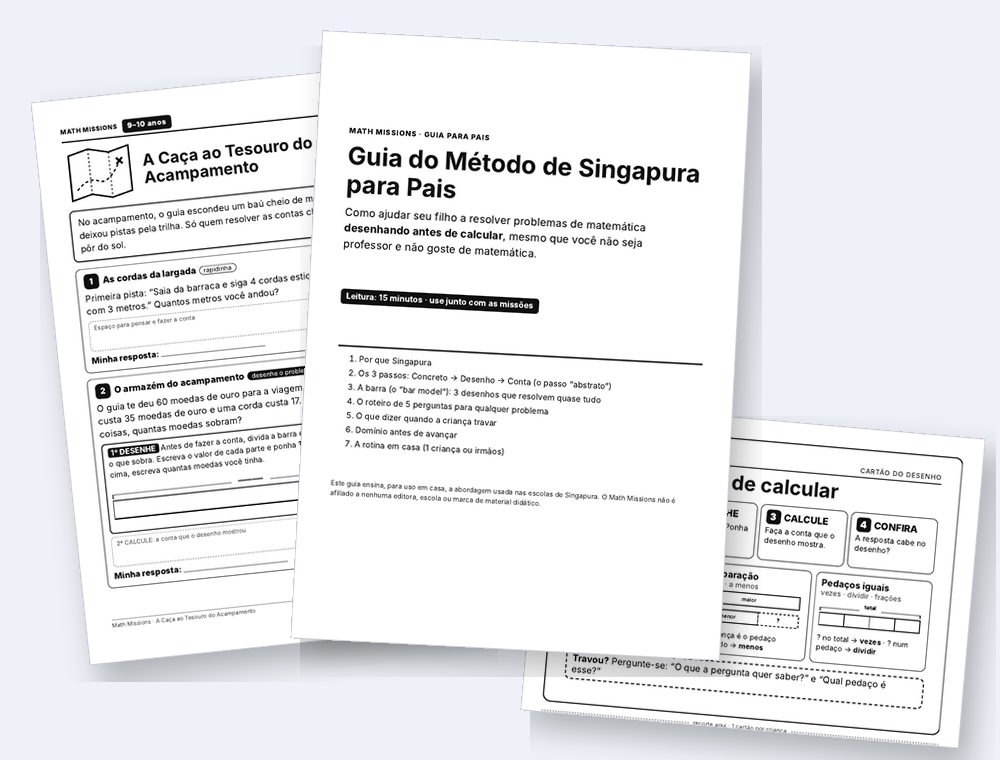
Não é falta de capacidade. É o método. A folha de repetição ensina a decorar e repetir: a conta vem pronta, ele faz e passa para a próxima. Ninguém nunca mostrou o problema para ele.
No país nº 1 do mundo em matemática, uma criança de 8 anos aprende a não adivinhar a conta. Ela desenha o problema, e a conta aparece.
Páginas reais do material
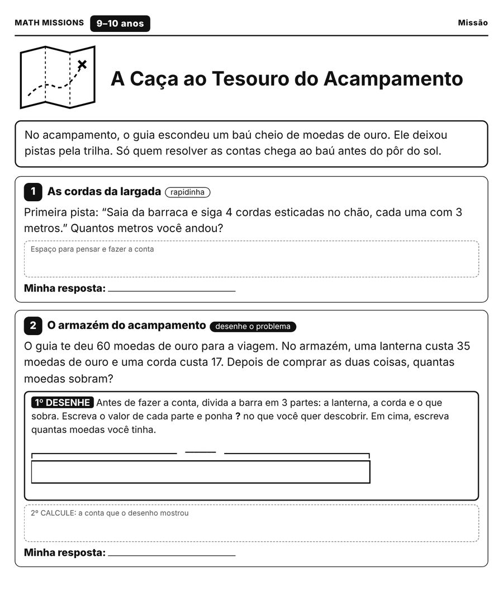
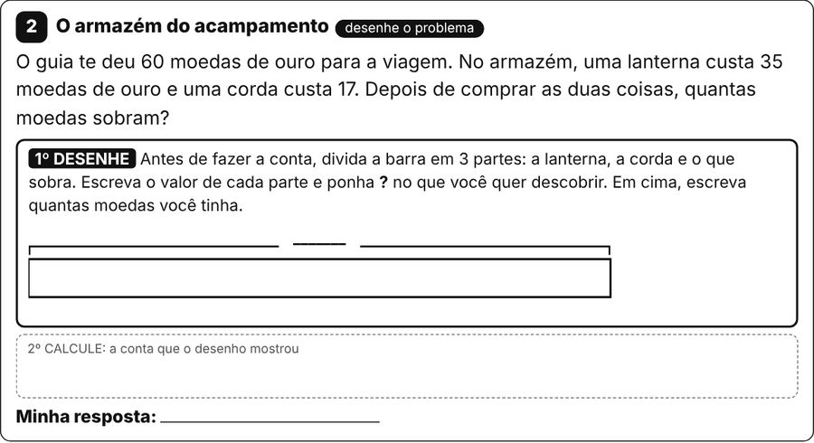
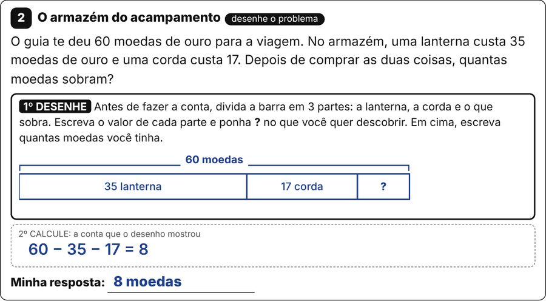
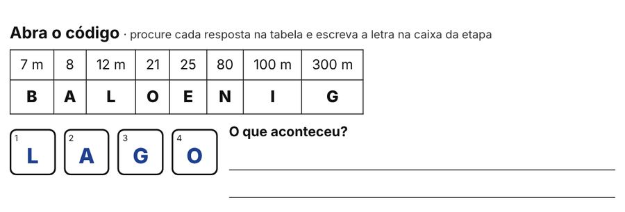
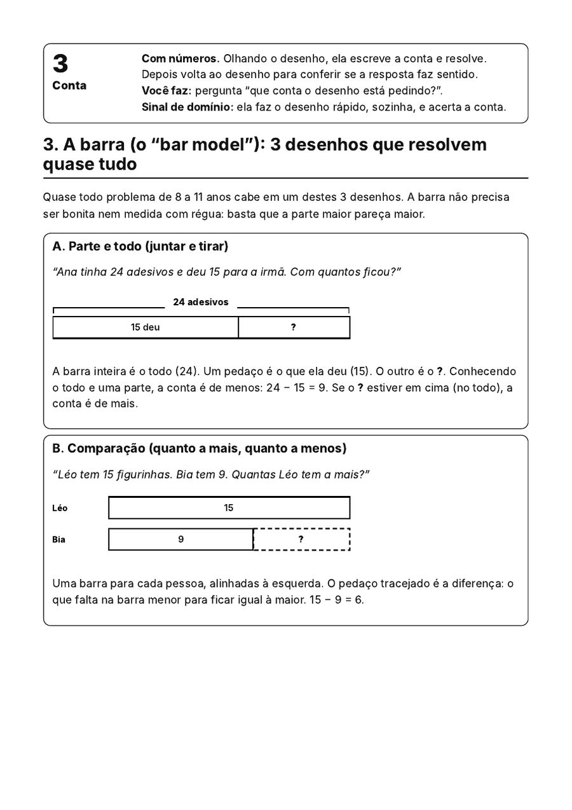
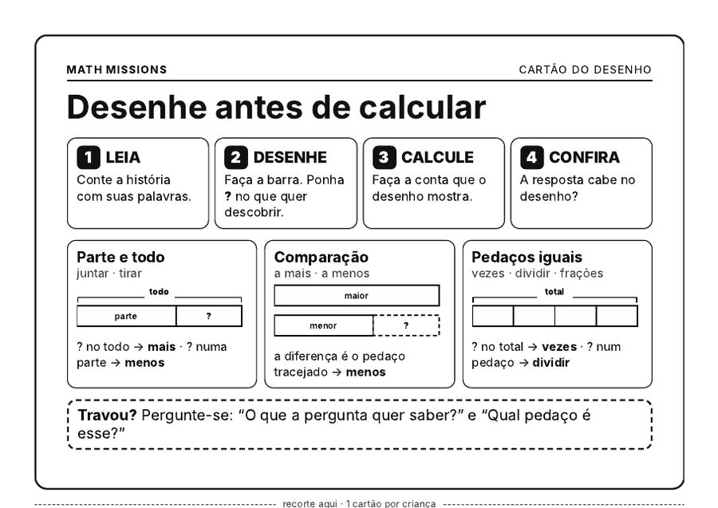
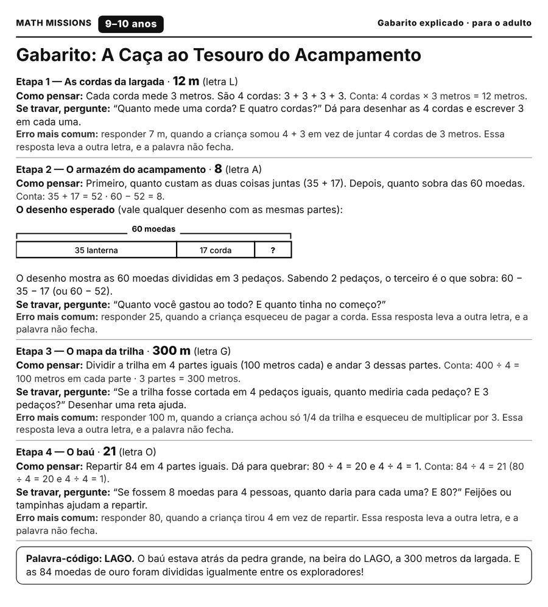
Arraste para o lado para ver as 7 páginas →
1. Concreto: ele mexe na situação com objetos (moedas do jogo, tampinhas).
2. Desenho: ele desenha o problema em barras. Partes e todo ficam à vista.
3. Conta: só agora ele escreve a conta e resolve.
E você? Não precisa ensinar a conta. Quando ele travar, você só diz:
O Guia traz as frases certas para quando ele travar.
Para treinar, 30 missões de mistério: em cada uma, há uma etapa “desenhe o problema”, e cada resposta vira uma letra da palavra-código. Se ele chutou, a palavra não fecha, e é a folha que o manda voltar ao desenho.
Quero ver a oferta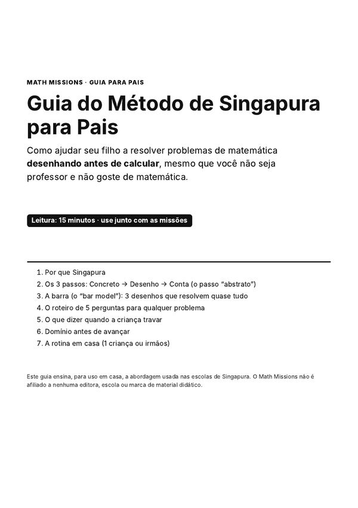
Peça central
Guia do Método de Singapura para Pais: os 3 passos explicados em linguagem de casa, como desenhar cada tipo de problema em barras e o que dizer quando ele travar.
30 Missões de Mistério (8 a 11 anos), cada uma com a etapa “desenhe o problema”
Cartão do Desenho para imprimir: o roteiro do bar model em 4 palavras, para deixar na mesa na hora da lição
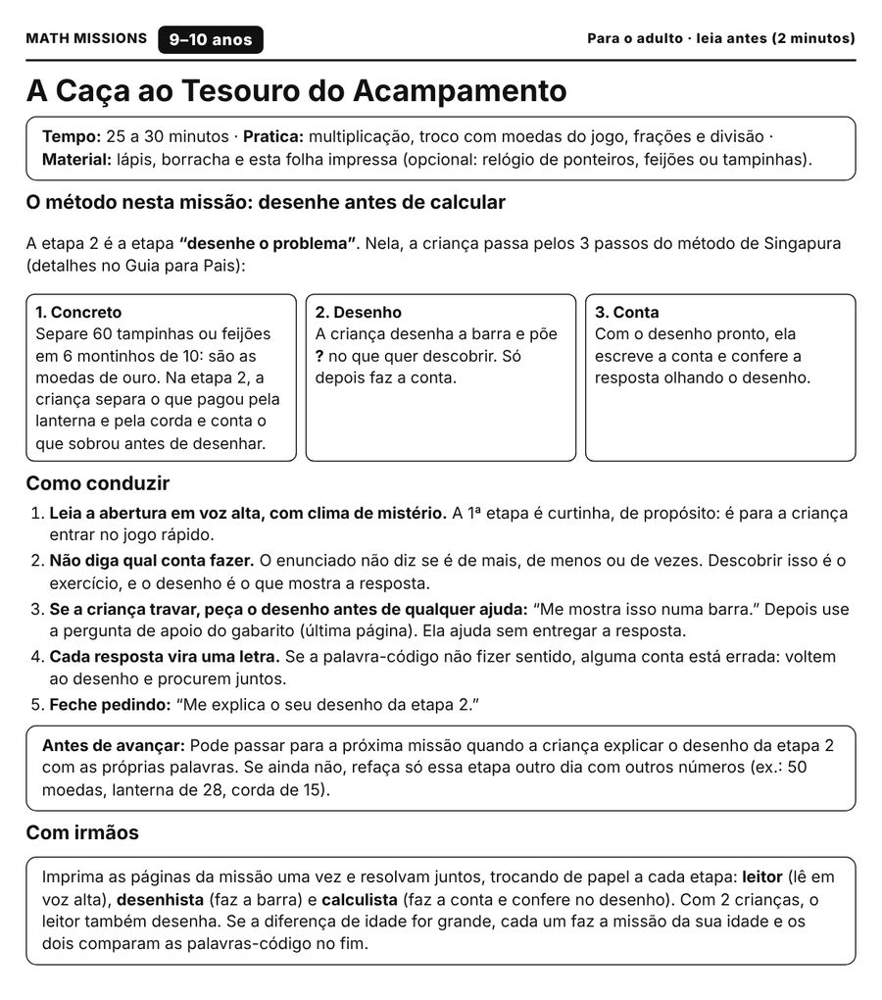
Roteiros para Pais: a página “leia antes (2 minutos)” de cada missão, a pergunta de apoio e o gabarito com o erro comum
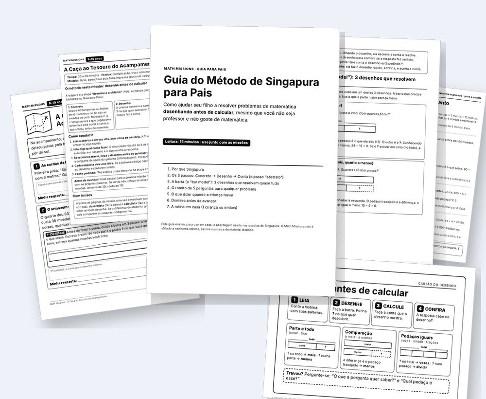
Menos do que uma hora de reforço particular.
Quero o método e as missõesGarantia de 30 dias. Teste o método com seu filho. Se não for para a sua família, por qualquer motivo, escreva para [E-MAIL] em até 30 dias da compra e devolvemos 100% do valor.
Não. É um material independente que usa os mesmos princípios do método ensinado nas escolas de Singapura (os 3 passos e o desenho em barras). Não tem vínculo com o Ministério da Educação de Singapura nem com editoras de “Singapore Math”.
Sim. O Guia foi escrito para pais, não para professores. Você não ensina a conta: você pede o desenho e usa as frases do Guia quando ele travar.
De 8 a 11 anos, com missões em 3 faixas (8–9, 9–10 e 10–11). Escolha a da idade do seu filho, ou suba e desça uma faixa conforme ele for.
Não. O desenho em barras ajuda a entender o problema, qualquer que seja o jeito de fazer a conta. No Reino Unido, muitas escolas já usam bar model.
As missões praticam habilidades comuns nessa idade nos países de língua inglesa. Não é material oficial nem segue o currículo de um país específico.
Funciona. Eles resolvem juntos, trocando de papel (leitor, desenhista e calculista), ou cada um faz a missão da sua idade.
O Guia se lê em cerca de 15 minutos. Cada missão leva de 20 a 35 minutos, de uma vez ou uma etapa por dia.
Não. Tudo é em preto e branco.
Em dólar americano. Seu banco converte na hora.
30 dias de garantia: escreva para [E-MAIL] e devolvemos 100% do valor.
Na próxima lição, em vez de “é de mais ou de vezes?”, entregue um lápis e diga: “Desenha pra mim.”
Quero ver a oferta